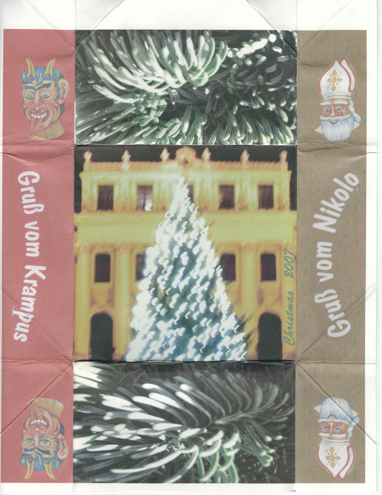
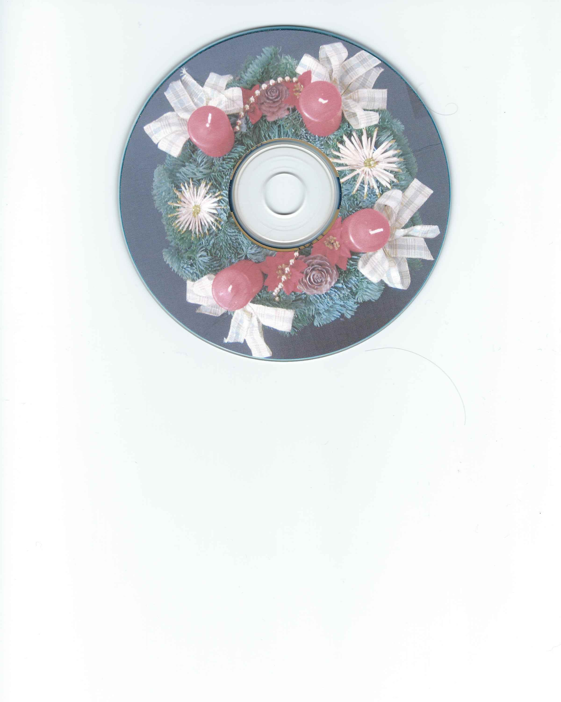

Christmas 2007
We moved to Vienna, Austria in 2007. That year's Christmas creation was a bit of a challenge. It was difficult to find CD cases and also wanted to reduce plastic. We opted for an oragami fold-up CD sleeve. We used thick card stock which was hard to fold. On the positive side, we were able to print a Christmas letter on the inside along with the track list. It was a bit of a mad rush to get everything printed and folded, stuffed in addressed envelopes and then mailed in one large box to Brad's mother, who kindly agreed to drop everything at the post office (shipping things individually from Austria would have cost "ein Arm und ein Bein"). The cover photo is of Schönbrunn palace during the annual Christmas market. We remember it being very cold. The side art is of Krampus and Nikolo. We had never heard of Krampus before moving to Austria and we always enjoyed the big Krampus fest near our apartment that would end with Nikolo driving out Krampus and his cohorts and giving the children candy. The CD art is of our advent wreath for that year.
Your browser does not support the audio element.
 